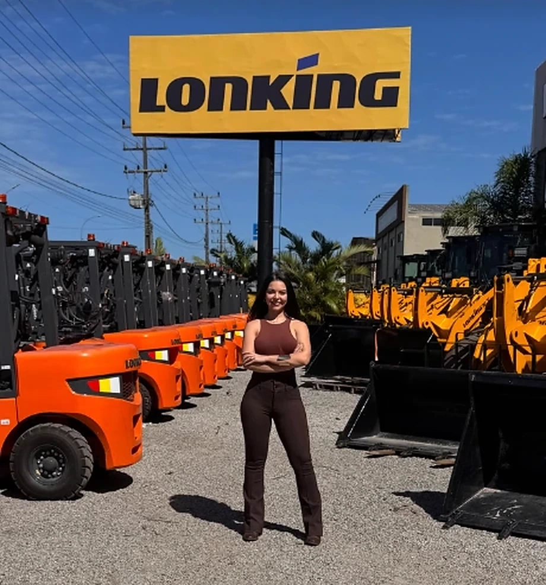

REPRESENTAÇÃO AUTORIZADA
Seu próximo
grande movimento.
Empilhadeiras Lonking e Hangcha, com atendimento direto de Sarah Camargo.


CATÁLOGO
Encontre sua máquina.

QUEM É SARAH
Sou a Sarah
Camargo.
Represento a Lonking e a Hangcha. Quando você entra em contato, sou eu quem atende.
Me conte o peso da carga, a altura de elevação e onde a máquina vai trabalhar. Com essas informações, posso ajudar você a escolher entre os modelos do catálogo.
ENTREGAS REALIZADAS
Mais de 300
máquinas vendidas.
Registros das entregas de Sarah Camargo.
CONTATO